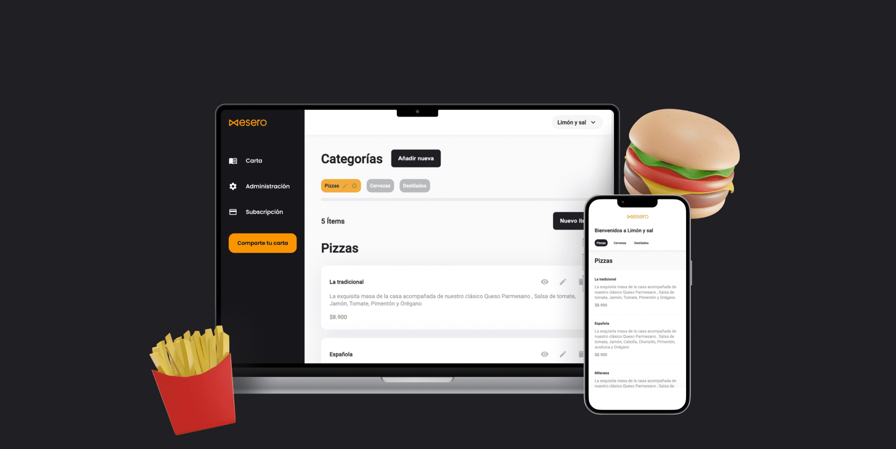
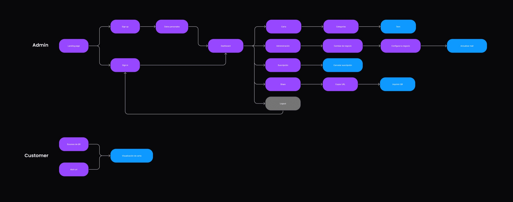
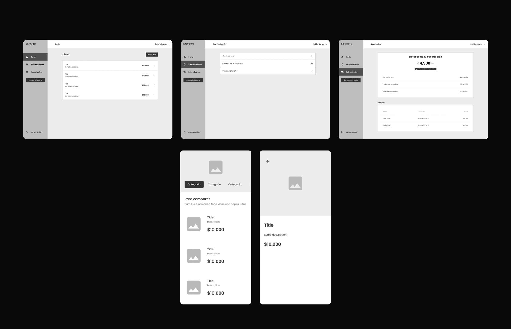
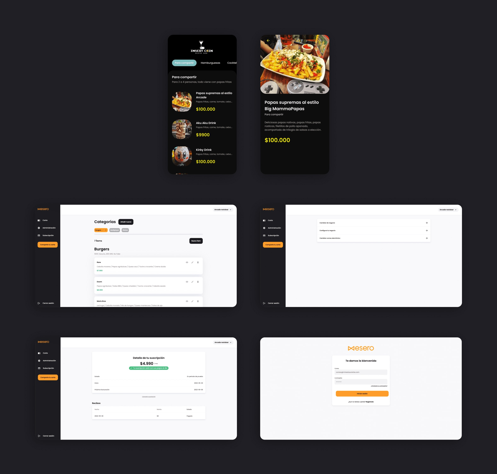

A digital menu made for reading.
Designing and building a responsive platform that gives restaurants a menu they can update—and guests an experience they can comfortably browse.

Mesero lets restaurants, cafés, and pubs turn their menus into a branded digital experience that guests can open by scanning a QR code.
- Client
- Mesero
- Role
- UI Designer · HTML/CSS
- Platform
- Responsive web
- Focus
- Digital menus
01 · Problem
PDF menus were difficult to use
Many restaurant menus were slow to load, difficult to read on a phone, and quickly became outdated. A static PDF also made it hard to maintain hierarchy, present products clearly, or adapt the experience to different screen sizes.
Mesero set out to create a menu that was readable, responsive, affordable, customizable, and always current.
02 · Flow
Designing for two journeys
We mapped the administrator’s path for creating and maintaining a menu, as well as the guest’s path from scanning a code to browsing products. Looking at both sides helped connect the restaurant’s operational needs with the customer experience.

03 · Structure
Learning from the category
A competitor review helped us understand how other products organized restaurant menus, which information deserved the strongest emphasis, and what could move into a secondary product-detail view.

04 · Interface
Refining the menu through feedback
Feedback on the wireframes led to structural changes before moving into high fidelity. The final proposal gives restaurants space for their brand while maintaining a clear, adaptable product hierarchy for guests.
